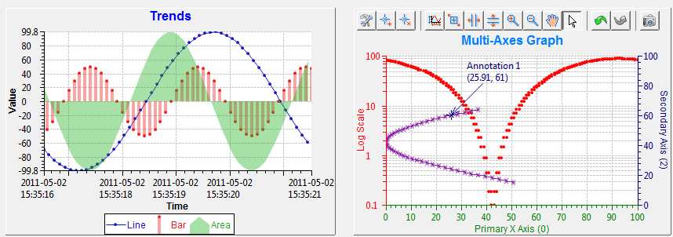

XY Graph
A widget that is able to plot 1D or 2D data in an XY Graph.
It has comprehensive drawing and operating functionalities:
- Supports scalar PV, array or waveform PV.
-
Line chart, scatter chart, bar chart, step chart, area chart...
-
Abundant interactive operating capabilities: Five Zoom Types, Panning, Auto Scale, Add/Remove Annotations, Undo/Redo, Take
snapshot.
-
Configure properties at Runtime, such as chaning trace color, line width and axis color etc,.
-
Multiple axes support
-
Log scale, date time format axis support
-
Group legends by axes
-
Annotations could be free or snapped to a trace
-
...

Operations
The widget is equipped with a toolbar which allows you to:
- Configure the properties of graph, axes or traces.
- Add/Remove Annotations. Annotations are moveable by dragging and dropping.
- Perform auto scaling.
- Zoom In/Out on plotting area or axes in different ways.
- Pan on plotting area or axes.
- Undo/Redo operations up to 30 steps.
- Save snapshot to image file.
Special Properties
Graph properties
- Title (title)
- Title of the graph.
- Title Font (title_font)
- Font of the title.
- Show Legend (show_legend)
- Show traces legend on graph.
- Show Plot Area Border (show_plot_area_border)
- Show border around the plot area.
- Plot Area Background Color (plot_area_background_color)
-
Color the plot area backgournd.
- Transparent (transparent)
- If the background is transparent.
- Axis Count (axis_count)
- Total number of axes. At least two and up to four axes
can be added to the graph. Properties sheet will be updated whenever you make change to this property,
so that you can set the properties for each axis.
- Trace Count (trace_count)
- Total number of traces. Up to 20 traces
can be added to the graph. Properties sheet will be updated whenever you make change to this property,
so that you can set the properties for each trace.
- Show Toolbar (show_toolbar)
- If toolbar is visible.
- Trigger PV (trigger_pv)
- The PV whose value change event will trigger trace update if
the
Update Mode property of the trace is set toTrigger.
Axis Properties
The property id for axis has a prefix of axis_{index}_. In which, {index} should
be replaced with the index of the axis, which starts from 0. For example, the property id
of Axis Color property for primary X Axis (0) is axis_0_axis_color.
- Auto Scale (auto_scale)
- If the axis will automatically adjust its scale according to the
data range.
- Auto Scale Threshold (auto_scale_threshold)
- The threshold must be
a value in range [0,1], which represents the percentage of the plot area.
The autoScale will performed only if the spare space exceeds this threshold.
So it may reduce the CPU usage by increasing the threshold.
- Axis Color (axis_color)
- Color of the axis.
- Axis Title (axis_title)
- Title of the axis.
- Dash Grid Line (dash_grid_line)
- If the grid line is dash.
- Grid Color (grid_color)
- Color of the grid.
- Left/Bottom Side (left_bottom_side)
- Yes if the axis is on left/bottom side.
No if the axis is on right/up side.
- Log Scale (log_scale)
- If the axis scale is in log10.
- Maximum (maximum)
- Upper range of the axis.
- Minimum (minimum)
- Lower range of the axis.
- Scale Font (scale_font)
- Font of the scale.
- Scale Format (scale_format)
- The format pattern used to format the numeric value
on axis. For example,
#.00 formats the number 1234 as 1234.00, #.##
formats the number 12.3456 as 12.35, 0.###E0 formats the number 1234 as 1.234E3.
If it is an empty string, the axis will be automatically formatted.
Refer to http://download.oracle.com/javase/1.5.0/docs/api/java/text/DecimalFormat.html
for more details.
- Show Grid (show_grid)
- Show grid in plot area for this axis.
- Time Format (time_format)
- The format of date and time.
- Title Font (title_font)
- Font of the axis title.
- Visible (visible)
- If the axis is visible.
- Y Axis (y_axis)
- If the axis is a Y axis. This property is
invisible to Primary X Axis and Primary Y Axis.
Trace Properties
The property id for traces has a prefix of trace_{index}_.
In which, {index} should
be replaced with the index of the trace, which starts from 0. For example, the property id
of Trace Color property for Trace 0 is trace_0_trace_color.
- Anti Alias (anti_alias)
- Enable this will make the trace looks more smooth.
- Buffer Size (buffer_size)
- Size of the buffer which stores data of the trace. It is
a FIFO buffer, so if the buffer is full, the oldest data will be deleted when new data arrives.
- Concatenate (concatenate)
- If yes, it will concatenate newly arrived data with old data.
Otherwise, it only plots newly arrived data.
- Line Width (line_width)
- Line thickness of the trace.
For trace type of Bar, this is the bar width.
- Name (name)
- Name of the trace.
- Plot Mode (plot_mode)
- The mode of plotting.
Plot last n pts will
always plot the last buffer size of points of the input data or concatenated data.
Plot n pts & stop will stop plotting after buffer size is full.
- Point Size (point_size)
- Size of the point in pixels if point systle is not
None.
- Point Style (point_style)
- Style of the point.
- Trace Color (trace_color)
- Color of the trace.
- Trace Type (trace_type)
- Type of the trace.
- Update Delay (update_delay)
- If this is not zero, the graph will not update everytime
when new data arrived. Instead, it will delay for specified milliseconds before redrawing the graph.
This can help to reduce the CPU usage especially when the PV updates very fast.
For multiple traces, the shortest delay will be used.
- Update Mode (update_mode)
- The mode that when should new data be added to the trace buffer
and get plotted.
- X or Y: Update the trace whenever X PV or Y PV data changed.
Data will not be missed in this mode.
- X AND Y: Update the trace only if both X PV and Y PV data changed.
Data may subject to missing in this mode. For example, if Y PV updated faster than
X PV.
- X: Update the trace only if X PV data changed.
Data may subject to missing in this mode. For example, if Y PV updated faster than
X PV.
- Y: Update the trace only if Y PV data changed.
Data may subject to missing in this mode. For example, if X PV updated faster than
Y PV.
- Trigger: Update the trace only if trigger PV data changed. Trigger PV is specified
in
Trigger PV property of the graph. One graph can only have one trigger PV.
Data may subject to missing in this mode. For example, if Y PV updated faster than
Trigger PV.
- Visible
- Visibility of the trace.
- X Axis Index (x_axis_index)
- Index of the axis that is X Axis of this trace.
- X PV (x_pv)
- PV for x value, leave blank for a chronological plot, which means only Y data will be
plotted. The PV can be either a PV with scalar data or a PV with numeric array data.
- Y Axis Index (y_axis_index)
- Index of the axis that is Y Axis of this trace.
- Y PV (y_pv)
- PV for y value. The PV can be either a PV with scalar data or a PV with numeric array data.
Special Methods
See Also
Special Methods
clearGraph
public void clearGraph()
- Clear the graph by deleting data in buffer.
getXBuffer
public double[] getXBuffer(int i)
- Returns the current X axis buffer of the trace i.
getYBuffer
public double[] getYBuffer(int i)
- Returns the current Y axis buffer of the trace i.